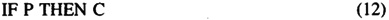

by Abraham Kandel
CRC Press, CRC Press LLC
ISBN: 084934297x Pub Date: 11/01/91
|
|
Fuzzy Expert Systems
by Abraham Kandel CRC Press, CRC Press LLC ISBN: 084934297x Pub Date: 11/01/91 |
| Previous | Table of Contents | Next |
An inference engine is an expert system tool built for the evaluation of the knowledge base.7,8,9,10 The inputs to the inference engine are the compiled data (provided by the FC) and the knowledge base. The output is the conclusions of rules that have been fired.
First, we explain the structure of the knowledge base and then we discuss the evaluation process.
The knowledge base is a data structure which contains knowledge about the problem domain. A knowledge base can be represented by several different knowledge representation methods such as
The expert system described here uses production rules as a knowledge representation method.
The general structure of a production rule is

where P is the premise of the rule and C is the conclusion. The general structure of P is (using the BNF notation)
The general structure of the knowledge base is
The knowledge base is associated with a special matrix called Bit Matrix (BM). BM is a an NxN matrix where N represents the number of rules in the knowledge base, such that
and,
The bit matrix has 2 functions:
The bit matrix is created when the inference engine is activated. Next we discuss the evaluation process.
In order to understand the inference procedure, it is necessary to describe new data structures that are part of the inference mechanism. These data structure are two linked lists defined as:
The general algorithm for the evaluation process is
DONE : = FALSE;
WHILE NOT DONE DO
BEGIN
DONE : = TRUE;
I : = 1;
FOR I : = 1 TO N DO
IF NOT_IN_LR(I) THEN { check only the rules which are not in LR }
BEGIN
GET_PREMISE(STI); { get premise of rule I }
COMPILE_PREMISE(ST);
COMPARE(ST,BB,MATCH); { compare the premise against the blackboard }
IF MATCH > 0.5 THEN
BEGIN { if a match is found between BB and ST }
GET_CONCLUSION(CONC,I); { get conclusion of rule I }
COMPILE_CONCLUSION(CONC);
PLACE_CONCLUSION(CONC); { place conclusion on the blackboard }
ADD_TO_LR(I); { add the rule number to LR }
ADD_TO_LC(I); { if I is a concluding rule then add I to LC }
DONE : = FALSE;
END;
END;
END;
In other words, the algorithm as stated allows us to fire as many rules as possible in one cycle. The process will continue until no rules can be fired in one complete pass through the knowledge base. In step 4 the determination is made as to whether or not a rule can be fired. The following is an explanation of the matching process.
The matching process is divided into two steps. First it is necessary to match the key words (the key words are either identical or are synonyms). If there is a match between the key words of the premise and the key words of the compiled data then the evaluation process continues.
Let LB1 and UB1 be the upper and the lower bounds of key word 3 in a sentence from the compiled data, and LB2 and UB2 be the lower and the upper bounds of key word 3 in the compiled premise. Then let M be the result of the matching between the compiled data and the compiled premise.
In order to see how well the compiled data matches the compiled premise it is necessary to examine the degree of overlap between the compiled data and the compiled premise. For convenience we force the result to be in the range [0,1].
There are several cases to consider.
and the result of the matching may be greater than 1. Thus, the solution will be to choose one point out of the range of possible points (the range can be found in the characteristic function). So, for example, if the characteristic function of old varies in the range [1..120], then the value of the point we choose will be ; and if the characteristic function of the variable weight is in the range [1..280], then we choose the value of the point to be , and so on. But, if there is no characteristic function for the variable in the premise, we choose the value of the point to be . Thus, the value of the point is
* This number can be found in the proper characteristic function.
and the result of the matching will be
**See Definition 1.
Here we divide the intersection of the two ranges by the range of the compiled data. That means that M is an indication of how much from the compiled data is matched against the range of the compiled premise.
IF UB2 ≥ UB1 and LB2 ≥ LB1 (the ranges intersect and the range of the compiled premise is higher* than the range of the compiled data) then
*See Definition 1.
Again, by dividing the intersection with the range of the compiled data, we find the degree to which the compiled data matches the compiled premise.
As mentioned earlier, the premise may contain the key words not, and, or or. This means that the premise may be composed of more than one part (clause). In this case the matching is done separately for each part and the results are combined such that:
and
When the premise is evaluated (for each rule) then
| Previous | Table of Contents | Next |